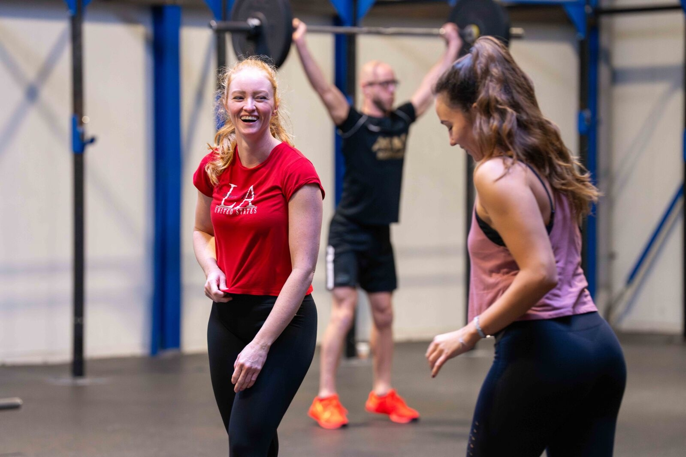

Programma
28 day kickstart
Hier begint iedereen. Niet als proefperiode, maar als fundament voor de jaren daarna.
Wat is de 28 day Kickstart?
De Kickstart is speciaal ontworpen voor drukke mensen die (weer) willen starten met trainen maar niet weten waar te beginnen. Wij maken trainen leuk, veilig en effectief. Zo leggen we een goede basis om op verder te bouwen.
Je traint in een kleine groep van maximaal 6 personen, zodat je persoonlijke aandacht krijgt. We nemen de tijd om alles goed uit te leggen en te oefenen.
De Kickstart is geen losse module, het is je start. Na vier weken weten we wat jouw niveau is, wat je nodig hebt, en hoe we je verder helpen: in small group training, in onze grotere groepslessen, met personal training, of een combinatie daarvan. Dat bespreken we samen aan het eind.

'Houding en techniek zijn heel belangrijk, en daar zijn de trainers hier ongelooflijk goed in.'

'Lang sponsor geweest van sportscholen waar ik niet naartoe ging, nu 20 kilo afgevallen.'
Wat je krijgt
12 trainingen in 4 weken
Drie trainingen per week op vaste tijden, zodat het in je schema past.
Kleine groepen (max 6)
Maximaal 6 personen per groep voor persoonlijke aandacht.
Een goede basis
Je leert de basis van kracht- en conditietraining en we laten je ervaren dat trainen leuk is!
Basisleefstijladvies
Naast training krijg je tips over voeding en herstel.